A 6-week UX sprint redesigning employee recognition workflows to increase genuine engagement — under NDA constraints.
We mapped two personas to identify friction and opportunity points in the recognition flow.
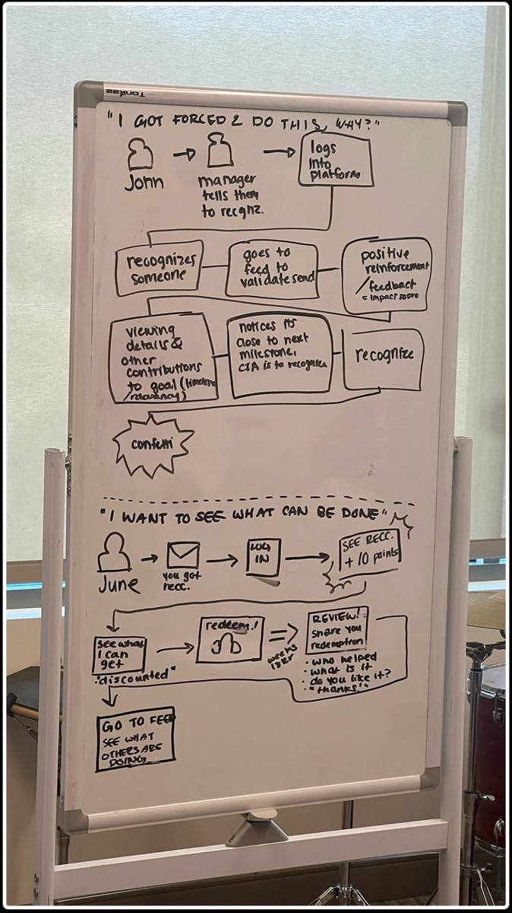
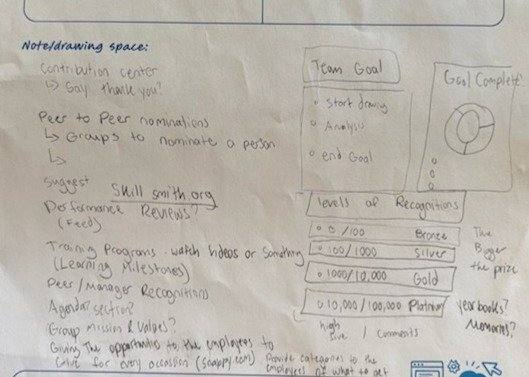
NDA limits visual sharing. I worked with limited access to the existing Awardco UI.
A streamlined recognition experience with clear visual hierarchy, social feedback, and gamified progress nudges.
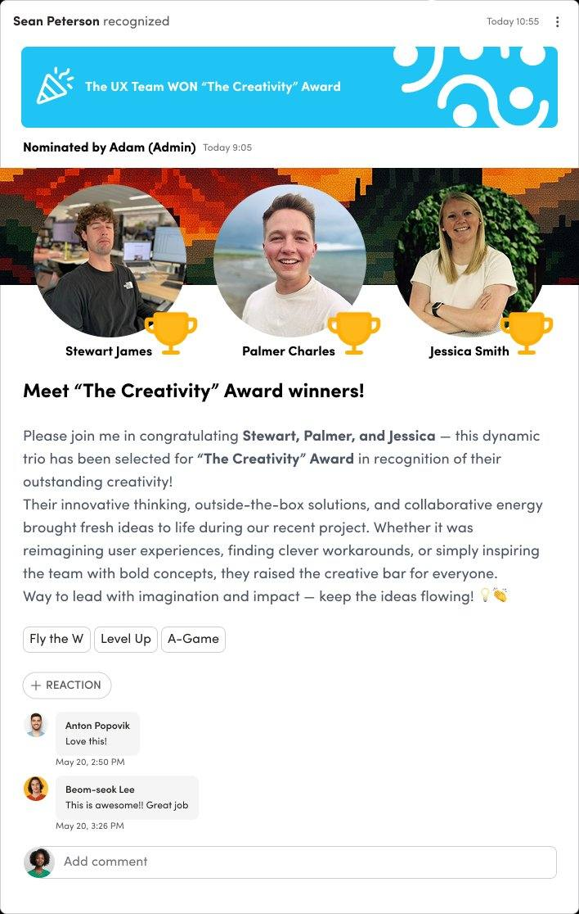
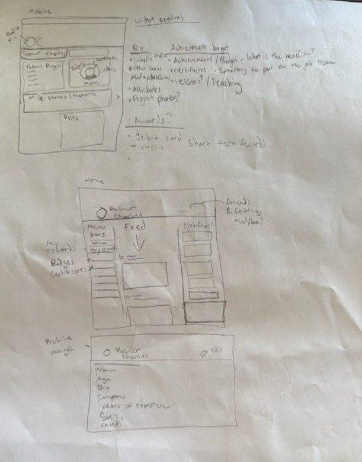
Left: Team Creativity Award — multiple winners. Right: "Silly Goose" individual award — showing the range of recognition tones designed.
A gamified mobile experience that transforms a visit to the Hobbiton Movie Set into an interactive adventure, character arcs, QR quests, XP rewards, and real-world collectibles.
Hobbiton Movie Set draws over 600,000 annual visitors — but the experience is entirely passive. A guided tour ends at the gift shop. There's no digital layer, no exploration incentive, and no system to drive repeat engagement or spending beyond the base ticket.
An interactive role playing app experience — bundled with the ticket — that turns every location in the Shire into an interactive quest node. Visitors choose a character, scan QR codes at real locations, complete narrative challenges, earn XP, and redeem it for physical collectibles and food vouchers.
The app's IA was designed around one constraint: it had to be operable while walking through an uneven, outdoor, real-world set. This ruled out deep navigation hierarchies. Every piece of critical information — quest status, XP, next location — lives within one tap of the home screen.
Each visitor selects a race with a unique backstory and objective — making the same physical location feel entirely different. The character layer is the core differentiator from a standard audio guide.
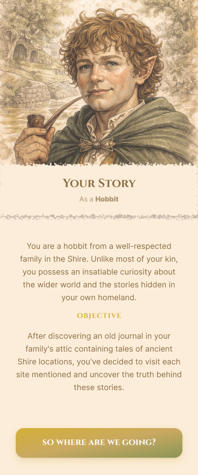
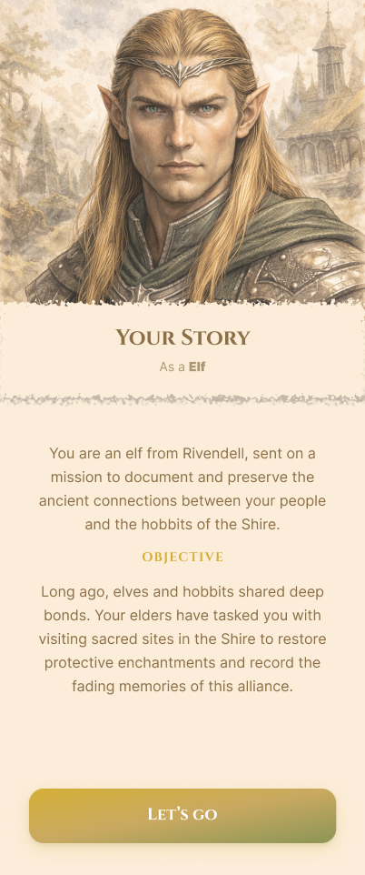
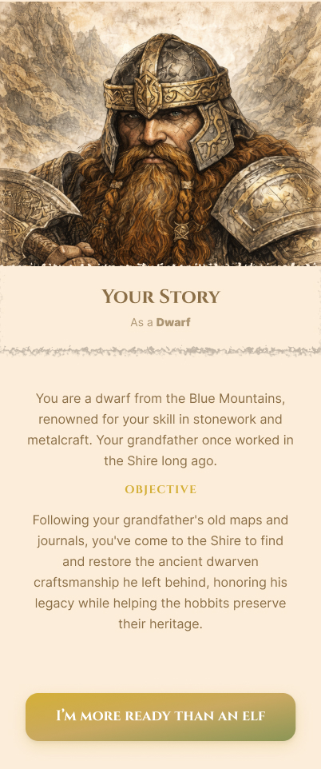
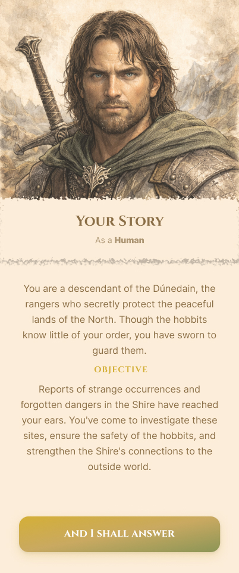
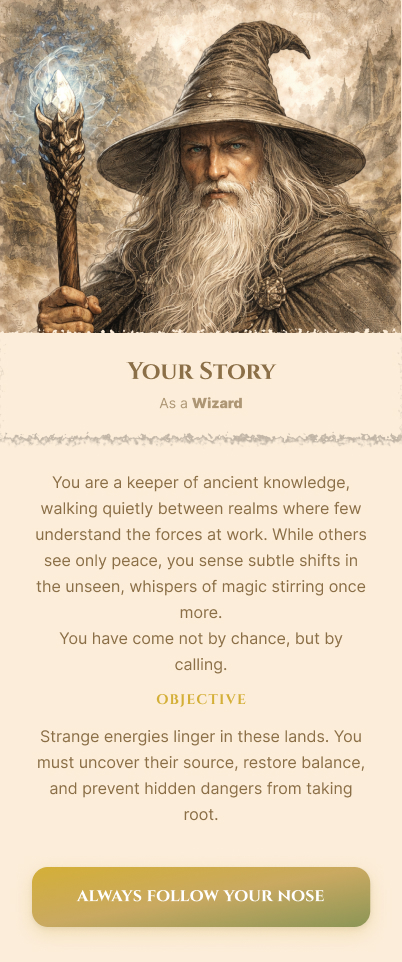
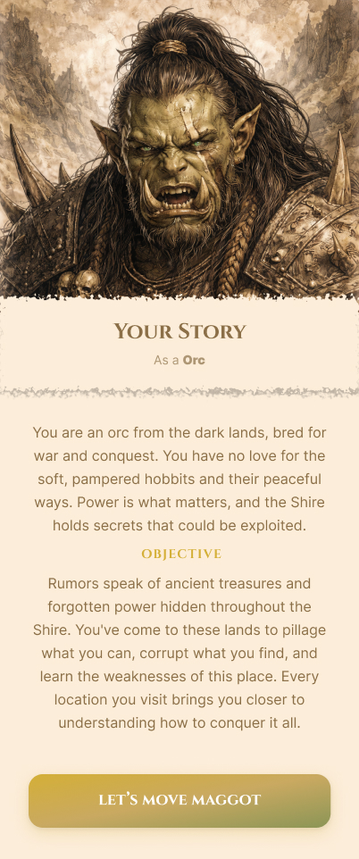
This project explores the intersection of cinematic immersion and mobile utility. The goal was to create a digital companion that feels like a physical artifact from Middle-earth, utilizing organic textures and rune-inspired typography to maintain a consistent thematic experience.
A cohesive visual system that demonstrates how thematic branding can be applied to complex mobile interfaces without sacrificing usability.
[email protected] · Orem, UT · (385) 476-1353
To the Hiring Team,
I'm Palmer — a UX designer and front-end developer who believes the best digital experiences feel inevitable. Not clever. Not loud. Just right.
At Awardco, I ran a 6-week UX sprint on employee recognition — a system where users felt forced rather than motivated. I mapped user journeys, built wireframes, and shipped hi-fi prototypes under real NDA constraints. The team gave us the Creativity Award. More importantly, the work shipped.
At Collect AF, I owned the core mobile UX — login flows, navigation, accessibility — and handed directly to engineering with no translation loss. That gap between design and code is where I live.
This portfolio is a live demo of what I can do. The orb, the animations — all built in a single HTML file with Three.js and GLSL shaders. I don't hand off. I ship.
If you're building something that should feel like the future, I'd like to help build it.
UX Designer + Developer · Crafting digital experiences that feel alive.
A passionate UX designer with a love for turning complex ideas into intuitive, user-centered experiences. My journey into UX started when I first saw the term while choosing a major at Utah Valley University.
“Palmer has an incredible eye for detail. He doesn’t just design things to be beautiful, he makes sure they actually make sense to the eye and the user.”
“It’s rare to find a designer who balances technical skill with such a high level of taste. Palmer’s work always has this polished, cinematic feel that really sets it apart from the crowd.”
“Palmer is the person you want in the room during a brainstorm. He’s great at listening to the ‘why’ behind a project and translating that into a seamless, intuitive experience.”
Open to full-time UX roles, internships, and freelance projects. Based in Utah — open to remote.
Three projects spanning UX research, product design, and interaction — each with a real problem, a real process, and real constraints.
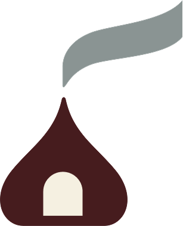
A free mobile tourism app designed to help families, first-time visitors, and local residents efficiently navigate and plan trips in the Hershey, Pennsylvania area.
I lived in Hershey, Pennsylvania for a short time and was deeply inspired by Milton Hershey's vision of making every visit "a moment of goodness." From the start, I knew two things: the app needed to honor his values, and it needed to solve a real problem for real visitors.
Trip planning in the Hershey area is fragmented. Visitors currently rely on multiple apps to research attractions, check hours, navigate, and find deals — a stressful, time-consuming experience that contradicts Milton Hershey's vision.
The first major decision: should the app be free or include paid features? To honor Milton Hershey's vision, I committed to a 100% free product — revenue through partnerships with local vendors and businesses, with a small percentage going back to Hershey.
The design was grounded in two things: speed of exploration and depth of research. Figma Make handled the heavy lifting on early layouts while journey mapping made sure every feature decision was anchored to a real user pain point.
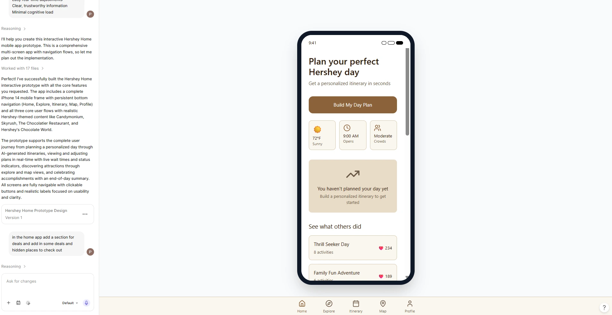
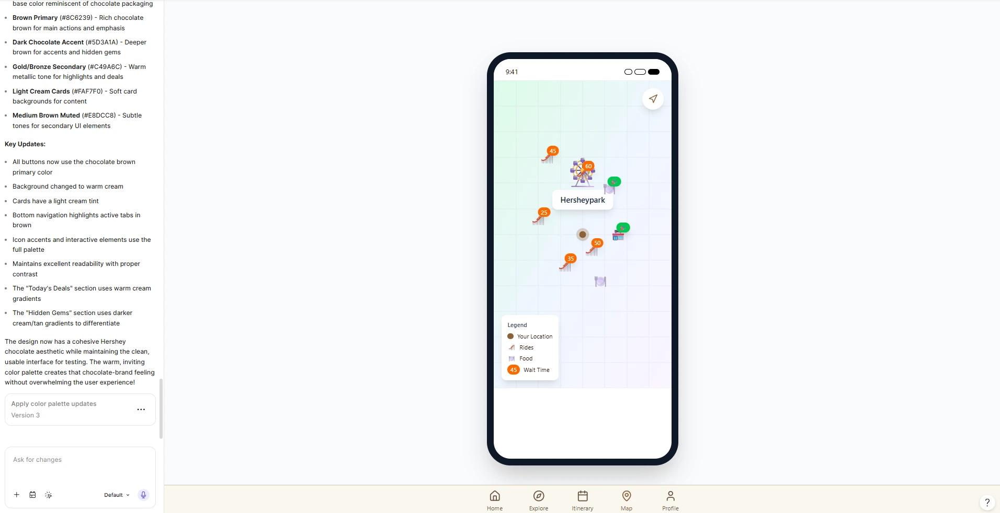
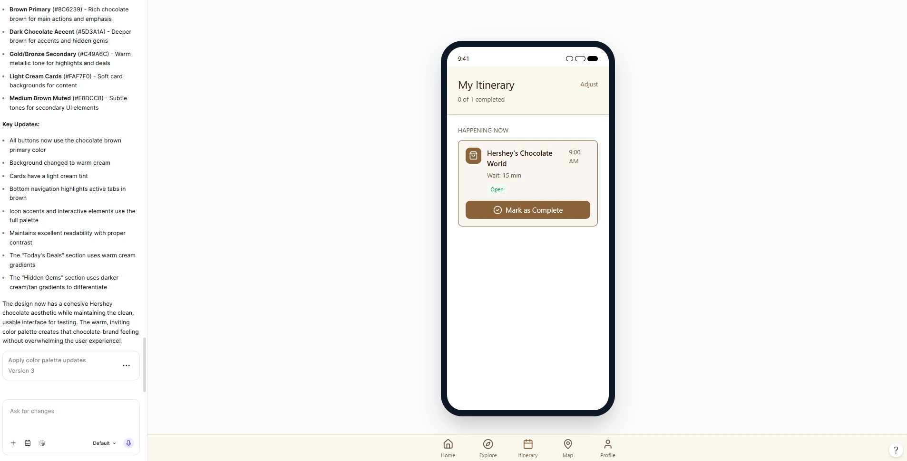
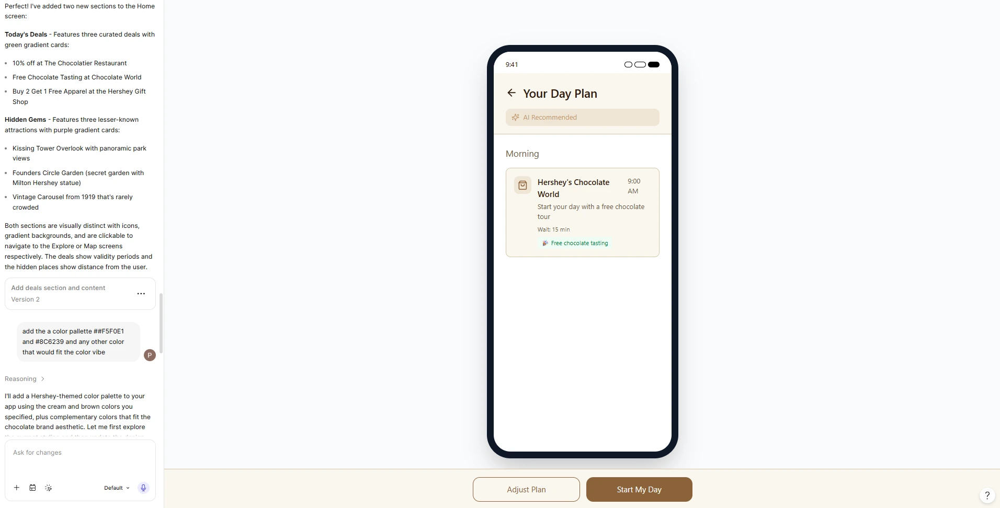
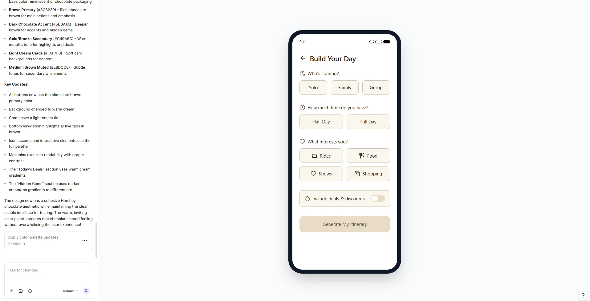
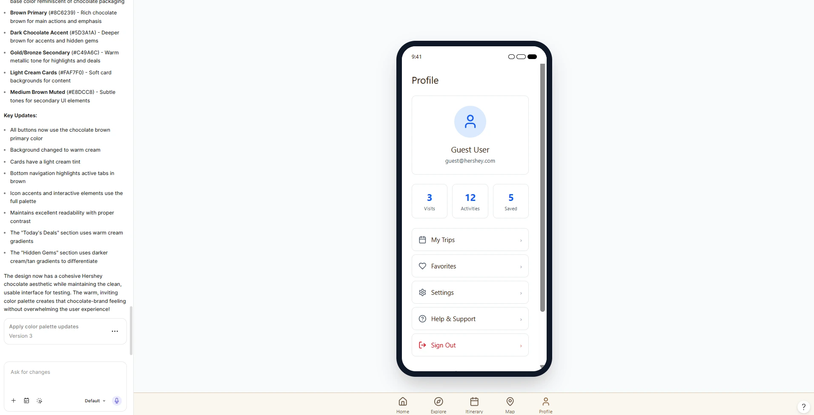
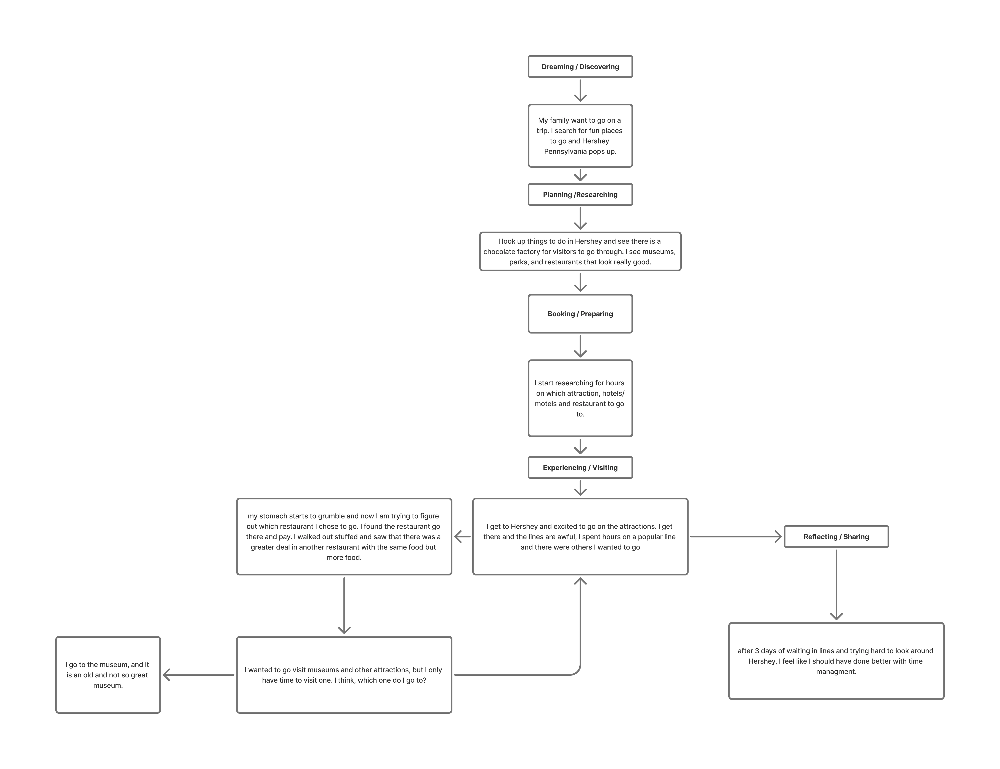
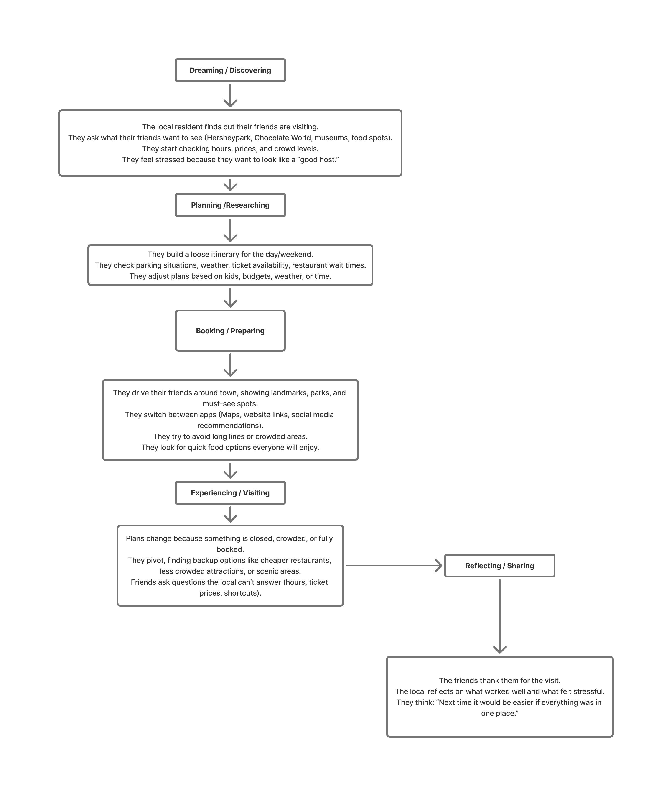
The nav structure was deliberately minimal — four tabs — because testing showed users didn't explore apps during a trip. They returned to the same two screens repeatedly: the Map and the itinerary. Everything else was surfaced contextually rather than buried in sub-menus.
User testing revealed clear signals: people wanted one app over many, trusted AI-generated itineraries when they felt accurate and fast, and engaged with deals only when they felt relevant and timely.
The most critical design change came from testing — users were confused about whether the app was for Hersheypark specifically or the broader Hershey area. This confusion surfaced consistently across multiple sessions.
I made the call to broaden HersheyHome to the entire Hershey area — not just the park. This decision aligned with user expectations, supported more features like food and hotels, and better honored Milton Hershey's broader vision of the town itself.
Every decision — scope, button placement, visual hierarchy — converged into a single high-fidelity prototype. The research paid off. What started as a fragmented tourist experience became one coherent, frictionless app.
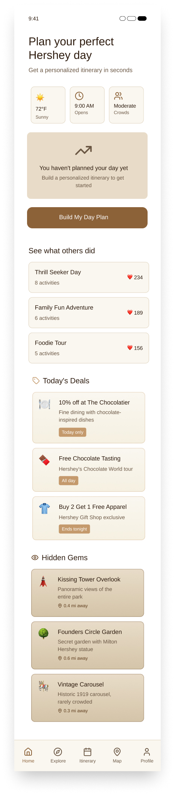
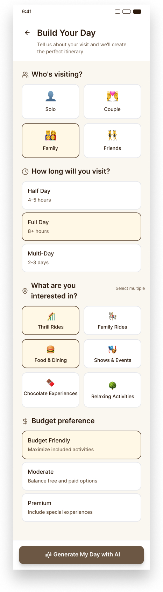
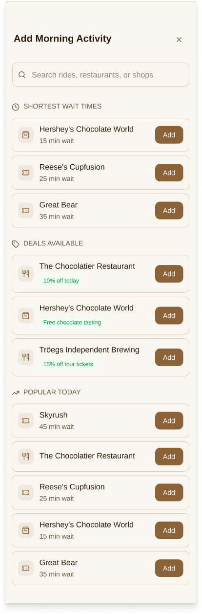
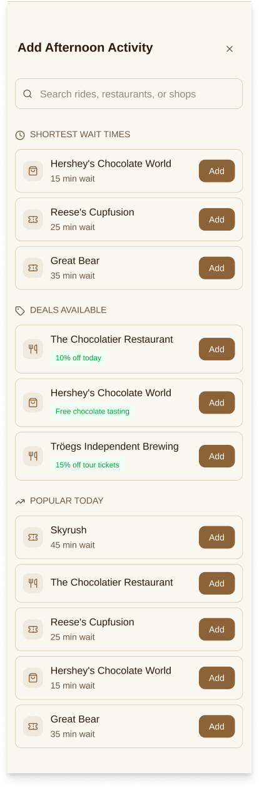
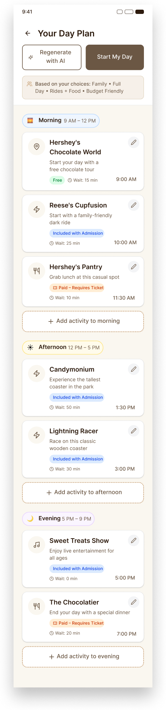
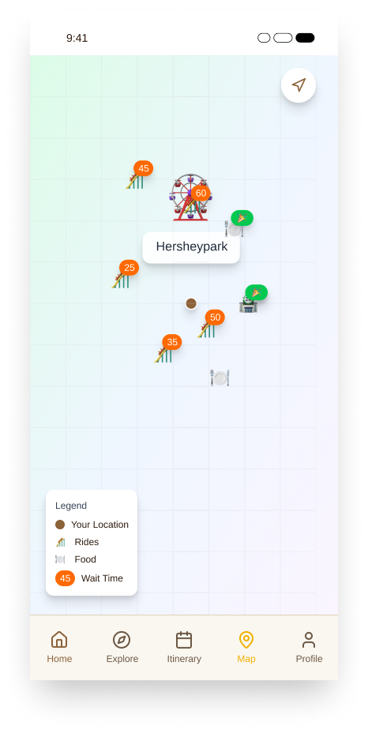
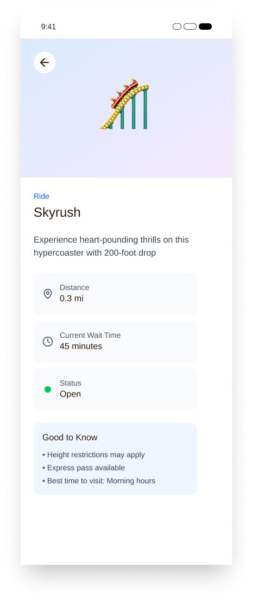
Next priorities: improve AI accuracy, expand deals, introduce user-generated itineraries, and explore augmented reality overlays for on-site navigation.